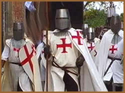
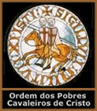
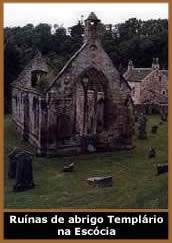
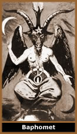

As
Cruzadas
No ano 1071 os turcos mulçumanos
tomaram Jerusalém. Na Europa, a Igreja Católica
organizou expedições militares em direção
à Terra Santa, com o objetivo oficial de reconquistar os
territórios sagrados de sua religião. Essas expedições
foram denominadas Cruzadas, pelo fato de que seus peregrinos
usavam uma cruz nas vestimentas e bandeiras.
Com a decadência do sistema feudal europeu,
tornar-se um cruzado e partir para o Oriente em busca de terras
e riquezas era uma alternativa considerável. Assim, a maior
parte dos soldados cruzados era composta por camponeses e mendigos.
Isso sugere que havia motivos comerciais e políticos camuflados
sob o objetivo religioso. Além disso, os mulçumanos
não se opunham a peregrinação cristã
até Jerusalém. Havia apenas pequenos conflitos entre
estes grupos distintos. Os cristãos solicitaram ao Papa
Urbano II que os ajudasse nessas batalhas. O Papa percebeu neste
pedido um pretexto para ampliar os domínios e a riqueza
da Igreja. Assim, organizou e enviou o primeiro contingente cruzado.
A
primeira Cruzada partiu em novembro de 1097 e contou com um apoio
intenso da população. Em 1212 promoveu-se até
mesmo a Cruzada das Crianças. Num momento de declínio
do exército cristão em terras orientais, milhares
de meninos foram levados na convicção de que a providência
Divina daria a eles o que grandes e poderosos esquadrões
não foram capazes de obter. A maioria dos garotos morreu
doente ou em naufrágios durante a viagem. Os poucos que
chegaram ao destino foram mortos ou escravizados pelos mulçumanos.
Ao todo, foram organizadas oito Cruzadas até 1270, quando
os cristãos viram-se obrigados a deixarem a Palestina e
outros territórios conquistados.
Os combates entre cristãos e mulçumanos
são considerados por alguns pesquisadores como a primeira
Guerra Mundial, pois atingiu a Europa, Ásia e África.
Nesse período, várias Ordens foram fundadas para
garantir a peregrinação cristã e a posse
das terras: Joaninos, Pobres Cavaleiros de Cristo, Teutônica,
Porta-Espada entre outras.
A Ordem dos Pobres
Cavaleiros de Cristo
No ano 1118, Jerusalém já era um
território cristão. Assim, nove monges veteranos
da primeira Cruzada, entre eles Hugh de Payen e Gogofredo de Saint
Omer, dirigiram-se ao rei de Jerusalém Balduíno
I e anunciaram a intenção de fundar uma ordem de
monges guerreiros. Dentro de suas possibilidades, se encarregariam
da segurança dos peregrinos que transitavam entre a Europa
e os territórios cristãos do Oriente. Os membros
fizeram votos de pobreza pessoal, obediência e castidade.
Os denominados Pobres Cavaleiros de Cristo
se instalaram numa parte do palácio que foi cedida por
Balduíno, um local que outrora foi o Templo de Salomão.
Por isso ficaram conhecidos como Cavaleiros do Templo,
ou Cavaleiros Templários. Apenas em 1127 no Concílio
de Troyes, o Papa Honório II outorgou a condição
de Ordem, concedendo um hábito branco com uma cruz vermelha
no peito. O símbolo era um cavalo montado por dois soldados,
numa alusão a pobreza.
A Ordem desenvolveu uma estrutura básica
e se organizou numa hierarquia composta de sacerdotes até
soldados. A esta altura, constituída não apenas
por religiosos mas principalmente por burgueses, os Templários
se sustentavam através de uma imensa fortuna que provinha
de doações dos reinados.
Durante um período de quase dois séculos,
a Ordem foi a maior organização Militar-Religiosa
do mundo. Suas atividades já não estavam restritas
aos objetivos iniciais. Os soldados templários recebiam
treinamento bélico; combatiam ao lado dos cruzados na Terra
Santa; conquistavam terras; administravam povoados; extraíam
minérios; construíam castelos, catedrais, moinhos,
alojamentos e oficinas; fiscalizavam o cumprimento das leis e
intervinham na política européia. Além de
aprimorarem o conhecimento em medicina, astronomia e matemática.
Houve até mesmo a criação de um sistema semelhante
ao dos bancos monetários atuais. Ao iniciar a viagem para
a Terra Santa, o peregrino trocava seu dinheiro por uma carta
de crédito nominal que lhe era restituída em qualquer
posto templário. Assim, seus bens estavam seguros da ação
de saqueadores. O poder dos Templários tornou-se maior
que a Monarquia e a Igreja.
As seguidas derrotas das Cruzadas no século
XIII, comprometeram a atividade principal dos Templários,
e a existência de uma Ordem Militar com tais objetivos já
não era necessária. Neste mesmo período,
o Rei Felipe IV - O Belo - comandava a França. Diferente
da maioria dos monarcas que eram subalternos à Igreja,
Felipe se engajava em campanhas aliadas ao Clérigo, em
troca de benefícios políticos.
Felipe IV devia terras e imensas somas em dinheiro
aos Templários. Assim, propôs ao arcebispo Beltrão
de Got uma troca de favores. O monarca usaria sua influência
para que o religioso se tornasse Papa. Por sua vez, Beltrão
de Got se comprometeria a exterminar a Ordem dos Templários
assim que alcançasse o papado. Apenas um Papa possuía
poder político para fazê-lo. No ano de 1305, Beltrão
de Got sobe ao Trono de São Pedro como o Papa Clemente
V.
Neste momento tinha início as acusações
contra os cavaleiros e a implacável perseguição
em toda a Europa. O processo inquisitório contra os Templários
se estendeu por vários anos sob torturas e acusações
diversas, como heresia, idolatria, homossexualismo e conspiração
com infiéis. Os condenados eram levados à fogueira
da Inquisição.
Na França, o último Grão-Mestre da Ordem,
Jacques
de Molay, e outros 5 mil cavaleiros foram encarcerados pelos soldados
do Rei Felipe. Na Grã-bretanha, a Ordem foi dissolvida
pelo Rei Eduardo II. Na Alemanha e Suíça, os Cavaleiros
foram declarados inocentes mas a Ordem também foi suprimida.
Finalmente, em 18 de março de 1314, Jacques
de Molay foi levado à fogueira da Santa Inquisição
às margens do Rio Sena, em Paris. Há uma lenda,
que agonizante em meio às chamas, o líder dos Templários
amaldiçoou o Papa Clemente V e o Rei Felipe, dizendo que
se os Templários tivessem sido injustamente condenados,
o Papa morreria em no máximo 40 dias e o Rei dentro de
um ano. O Papa morreu 33 dias após a execução
de Molay e o Rei em pouco mais de 6 meses.
Em toda a Europa, a Ordem dos Templários
foi oficialmente extinta. Seus bens, o imenso contingente do exército
e sua estrutura foram diluídos em outras Ordens menos expressivas.
Atualmente, a Ordem Rosa Cruz e a Maçonaria
se consideram ascendentes diretas dos Cavaleiros Templários.
Mistérios
Templários
Durante uma jornada que se estendeu por quase dois
séculos e se consagrou com um alto nível de poder
e popularidade, foi gerada uma série de lendas que se confundem
com fatos em torno dos Templários. Realmente, é
provável que tenham desenvolvido uma filosofia influenciada
pela sabedoria oriental. Mas não chegava a ser uma heresia.
Soma-se a isso às acusações apresentadas
no período da queda da Ordem e encontra-se uma imensidão
de hipóteses interessantes: desde adoração
ao demônio até a influência arquitetônica.
Até mesmo os objetivos originais da Ordem
dos Templários são alvos das possibilidades. Segundo
especulações, sua fundação teria sido
articulada por Bernardo de Claraval (São Bernardo) para
buscar a Arca da Aliança e as Tábuas
das Leis Divinas no Templo de Salomão. A partir do
momento que foram encontradas, os Templários se desenvolveram
em todos os aspectos. O Santo Graal seria apenas uma
metáfora para se referir a esses tesouros.
O
mito da heresia surgiu através das acusações
que dissolveram a Ordem em toda a Europa. Sob tortura, os cavaleiros
declaravam que cuspiam e andavam sobre a cruz, trocavam beijos
obscenos no umbigo e nas nádegas (nesta época, beijo
na boca entre homens era aceitável), negavam a divindade
de Cristo e ainda idolatravam uma imagem demoníaca denominada
Baphomet. Porém, após as sessões
de tortura e a irrevogável condenação, os
Cavaleiros negavam as confissões assinadas. Havia poucas
evidências de que os Templários se desviaram dos
conceitos básicos da Igreja Católica daquela época.
Na Grã-bretanha, Robert Bruce buscava a
independência da Escócia e articulava uma batalha
contra o exército do Rei Eduardo II. As tropas de Eduardo
possuíam armas e um contingente muito superior ao inimigo.
Mesmo assim os rebeldes escoceses combateram o exército
real. Acredita-se que um grupo de cavaleiros Templários,
altamente treinado, teria se refugiado na Escócia e lutado
ao lado de Bruce.
Provavelmente, em 1250 os Templários já
haviam estado na América. Devido ao seu grande crescimento
econômico através de matéria-prima e minérios
como ouro e prata, escassos na Europa, supõe-se que parte
de sua riqueza já havia sido extraída do continente
americano. O fato de ser uma Ordem Secreta, onde os segredos só
eram transmitidos entre seus membros à medida que eram
promovidos, explica a ausência de registros históricos
dessas navegações. Há mapas incluindo o Brasil
desde 1389.
Após a extinção da Ordem,
os Templários portugueses passaram a se chamar Ordem
de Cristo e mudaram sua bandeira. As naus que aportaram no
Brasil traziam a bandeira desta nova Ordem. Pedro Álvares
Cabral seria não apenas um navegador, mas um dos altos
comandantes da Ordem de Cristo, que fez uso dos mapas e cartas
de navegação templárias para "descobrir"
o Brasil.
A arquitetura
gótica surgiu repentinamente durante o desenvolvimento
da Ordem dos Templários. Não pode ser considerada
uma continuidade da arquitetura romana, pois os conceitos entre
ambas são totalmente opostos. A arquitetura romana baseia-se
numa força de cima para baixo que estabiliza toda a construção.
Enquanto a gótica está baseada no princípio
contrário, numa força que pressiona de baixo para
cima. Esses conceitos arquitetônicos e geométricos
são muito avançados para o pensamento medieval.
Portanto, acredita-se que a arquitetura gótica tenha surgido
através de um conhecimento secreto adquirido pelos Templários,
e as várias Catedrais tenham sido edificadas para guardar
suas riquezas.
Por
Spectrum